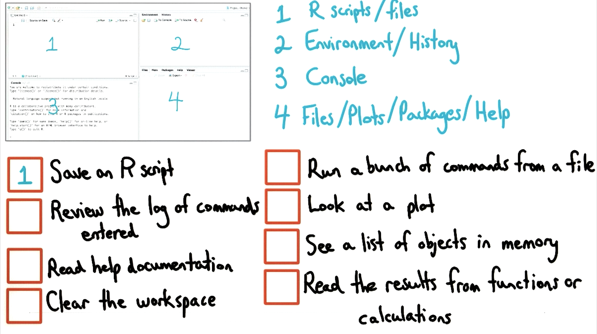

07. RStudio Layout
RStudio Layout
Question:
Start Quiz:

Solution:
INSTRUCTOR NOTE:
All four panels are configurable. The layout discussed is the default layout for RStudio.
You can change the default layout by going to Tools -> Options…
This quiz assumes the default layout.
A Beginner's Guide to R: Introduction by Sharon Machlis
Quick Guide to R Layout by Oscar Torres-Reyna.
Quiz clarification:
"Clear the workspace" means removing all variables from the current working memory.